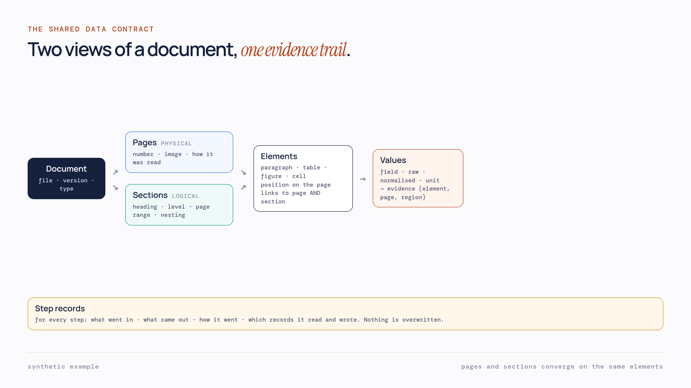

Decompose first
A document is split into logical sections, first by heuristics and then refined by a model, keeping both versions. Every page is processed in parallel and belongs to exactly one sub-section.
The engineering behind the projects: one real problem and how I designed around it, the five stages I take every pilot through, the tools grouped by job, and a small retrieval demo you can question.
A document platform was built for short documents such as healthcare faxes, where a 25-page limit was fine. Then a tender pilot needed documents of 800 pages and more, with no page limit, and everything after page 25 was lost. The system also had no idea of sections, and tables that ran across pages became separate tables. A bigger model could not fix any of that, because the data it needed was never stored.

A document is split into logical sections, first by heuristics and then refined by a model, keeping both versions. Every page is processed in parallel and belongs to exactly one sub-section.
A table running across four pages used to be saved as four tables. Enrichment at sub-section level links the continuations back into one.
Every stage writes an input audit, a result and an output audit, and results are never overwritten. Run, batch, source file, tenant, time and previous-stage id sit on every row, so any value traces back to its page.
An answer comes back with where it came from: the page, the section and the element. Agents come last, once the data underneath can be trusted.
The real pilot this grew from involved an 800-page tender. Examples and diagrams on this page are synthetic. Full design on the project page →
The same five stages keep coming back, whether the input is a bid email, a voice command, lending data or an insurance fax. Pick a stage: each one names the projects where I learned it.
Grouped by the job each layer does. Each tool lists the projects where I used it in client or product work.
Ask anything about my work. This runs entirely in your browser: BM25 retrieval over every passage in the projects. There is no LLM here, so answers are quoted with their source. If nothing matches well enough, it says so instead of guessing.
Pick a question above, or type your own.
k1 = 1.2 · b = 0.75 · abstains below a score threshold · nothing leaves your browser